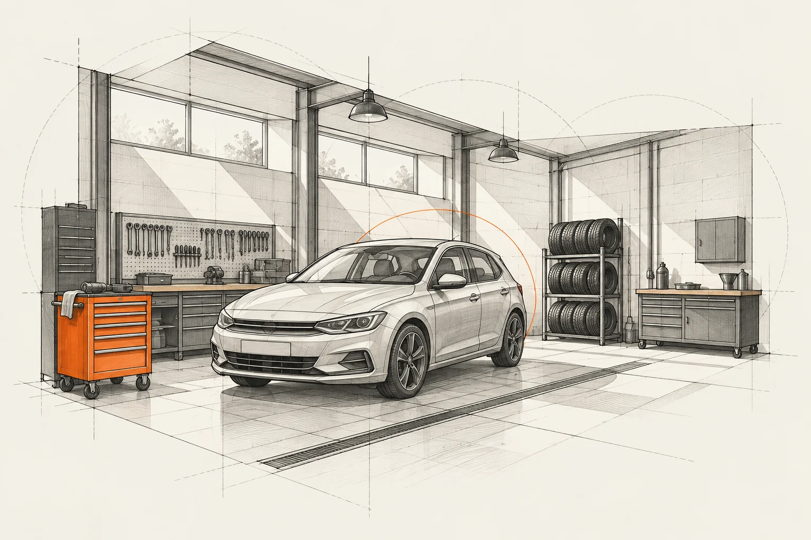

Zaczynamy od tego, co zauważasz.
Nie musisz znać nazw części. Ważniejsze jest, kiedy pojawia się objaw, co ostatnio się zmieniło i jakie prace były wykonywane.
Bieg Rzeczy to koncepcja warsztatu, w którym rozmowa jest częścią obsługi. Od pierwszego opisu problemu po odbiór auta wiadomo, co ustalamy i jaka decyzja jest potrzebna.
Poznaj przebieg obsługi ↗
Strefa rozmowy, część przeznaczona do sprawdzenia auta i spokojny punkt odbioru tworzą trzy etapy tej koncepcji. Każdy odpowiada innej potrzebie: opowiedzieć o problemie, poznać ustalenia, zrozumieć wykonane prace.
Bieg Rzeczy jest projektem KAIROX. Pokazujemy pomysł na miejsce i sposób pracy, nie istniejącą placówkę ani zespół.
Nie musisz znać nazw części. Ważniejsze jest, kiedy pojawia się objaw, co ostatnio się zmieniło i jakie prace były wykonywane.
W proponowanym modelu najpierw uzgadniamy zakres i koszt sprawdzenia auta. Po oględzinach omawiamy możliwe dalsze prace. Diagnoza i naprawa to dwa osobne ustalenia.
Przy odbiorze wracamy do zgłoszonego problemu, omawiamy wykonane prace i zalecenia. Klient ma przestrzeń, żeby dopytać.
Przygotuj markę, model, rocznik i opis objawu. Wspomnij o ostatnich naprawach. Jeśli nie znasz wszystkich danych, zacznij od tego, co wiesz.
Zobacz, z czym możesz się zgłosić ↗